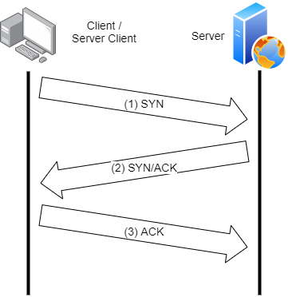

Установяване на връзка
UDP Протоколът
UDP протоколът не осъществява връзка с получателя на пакетите. Изпращачът на данни не е заинтересован от конусмацията на пакетите, а само от изпращането им.
TCP Протоколът
За разлика от UDP, при комуникация с TCP е необходимо да се установи връзка, преди да започне препращането на данни. Комуникация се осъществява посредством сокети (sockets), които се явяват крайна точка на комуникация.
- (1) SYN (Synchronize Sequence Number) - при изпращане на тази команда, клиентът декларира, че иска да се свърже със сървъра за обмен на данни и сегментен номер (sequence number), от който ще започне да се номерират последователните пакети.
- (2) ACK/SYN (Acknowledge / Synchronize Sequence Number) – Сървърът връща отговор (пакет), че е приел пакета от клиента (ACK) и на свой ред изпраща нов SYN пакет, който съдържа сегментния номер на пакетите на сървъра.
- (3) ACK – Клиентът приема пакета от сървъра, установява се стабилна връзка и обменът на данни може да започне.
Този сегментен номер се генерира случайно и служи да определи реда на пакетите, когато пристигнат в разбъркан ред. Също така той служи за поискване на повторно изпращане на пакет при негова липса или повреда.

Фиг. 1 Установяване на връзка при TCP.